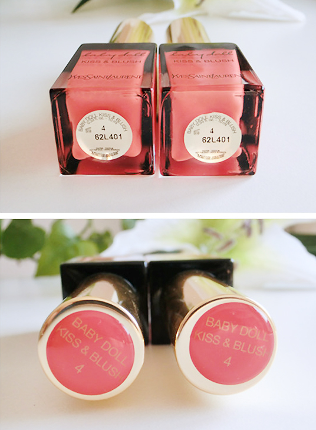

小美资深小编
概况
→包装有指甲油的即视感,方便携带

瓶底与瓶盖都有标示色号，入手的是广告色中4#，即为橘色，适合肤色较白，是比较气色与娇柔的色号，做为腮红时妆效非常的美。
遇肌即融般的丝滑感觉像极了奶油，很容易晕染开，超润的触感，极好的延展性，没有干燥难晕匀感。色彩饱和度与还原度都极高，一点就可以涂超大面积，颜色都很娇艳。
一点点就可以搞定，更多的是给人一种哑光有质感的极润唇膏。显色度高，完全遮盖原唇颜色与修饰唇纹，且妆后唇色均匀饱满。
当腮红注意量不需要太多哟，一点就可以啦，用指腹轻轻晕几下即可，很容易晕染的特别自然与特别均匀，可以很好的与肤色过渡，服帖度极好，妆效自然柔和呈雾面美感。